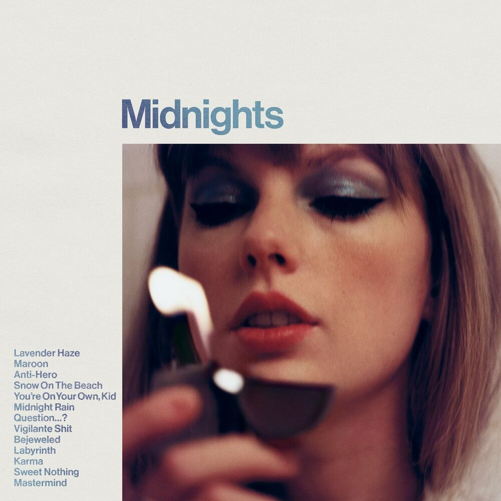
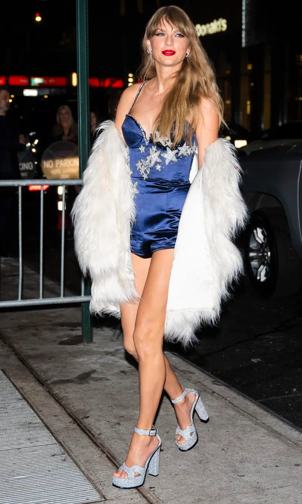

Release Date: October 21, 2022
Singles: Anti-Hero, Lavender Haze, Karma, Bejeweled
Genre: Pop
Midnights was Taylor Swift's tenth studio album released in 2022. Swift conceived it as a concept album about nocturnal ruminations inspired by her sleepless nights. The autobiographical songwriting explores broad emotions such as regrets, self-criticism, fantasies, heartbreak, and infatuation, using confessional yet cryptic lyrics that allude to her personal life and public image. The album primarily focuses on love and the reflections that ensue.Midnights was a return to the pop sound for Swift. Midnights features a subdued electronic soundscape consisting of mid-tempo rhythms, retro synthesizers, sparse drum machine beats, and digitally manipulated vocals.

Midnights was a major commercial success across all consumption metrics: streaming, digital sales, and physical sales. It broke various records on music streaming platforms. On Spotify, Midnights broke records for the highest single-day streams and the highest single-week streams. The album was also met with fairly critical review as well. In 2024, Midnights won Swift her fourth Album of the Year award at the 66th Grammy Awards. At this point in her career, Midnights was the fourth album Taylor Swift had released since she was last able to go on tour. So, following the album's release was the announcement of "The Eras Tour" which would span Swift's entire discography. This tour would go on to become a worldwide phenomenon and the highest grossing tour of all time. The release of Midnights followed by "The Eras Tour" catapulted Swift to an inescapable level of fame in 2023, and she has been at the height of her career ever since.